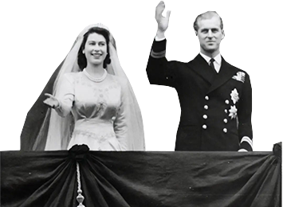

1926
1936
Edward VIII Abdication Crisis (1936)
The abdication of King Edward VIII in December 1936 was a pivotal moment in British history. He chose to abdicate after less than a year on the throne to marry Wallis Simpson, an American divorcee. This decision was controversial as it went against the advice of the government and caused a constitutional crisis, leading to his younger brother, George VI, ascending to the throne.
1944
British Royal Family During WWII (1939-1945 Normandy Landings)
During World War II, the British royal family remained in London, enduring the same air raids as their subjects, which significantly boosted public morale. King George VI and Queen Elizabeth famously refused to leave Buckingham Palace, despite the bombings. Their daughters, Elizabeth and Margaret, spent much of the war at Windsor Castle, but the royal family's visibility and engagement during the conflict solidified their role as symbols of national resilience.
1947
Wedding of Princess Elizabeth and Prince Philip (1947)
The marriage of Princess Elizabeth to Prince Philip on November 20, 1947, was a post-war celebration that captured the public’s imagination. Their wedding, held at Westminster Abbey, was one of the first major royal events to be broadcast to a wide audience, bringing a sense of renewal and joy in the aftermath of the war.1973
UK Joins the European Economic Community (1973)
The UK's entry into the European Economic Community on January 1, 1973, marked a significant shift in its economic and political landscape. This move was driven by a desire to boost economic growth through closer ties with neighboring countries, reflecting broader changes in global politics and economics.
1981
Royal Wedding of Prince Charles and Lady Diana (1981)
The royal wedding of Prince Charles to Lady Diana Spencer on July 29, 1981, was a global spectacle, watched by an estimated 750 million people worldwide.1992
Annus Horribilis (1992)
Queen Elizabeth II's "annus horribilis" in 1992 involved public separations, divorces within the family, and a devastating fire at Windsor Castle in November. These personal and public crises were widely reported and marked a challenging period for the monarchy, prompting calls for modernization and change.2016
Brexit Referendum (2016)
The Brexit referendum on June 23, 2016, marked a critical moment in UK history as the British public voted to leave the European Union. The decision, won by a narrow margin, reflected deep divisions within the country and triggered a series of political upheavals, including the resignation of the then Prime Minister. The referendum was a response to growing concerns over sovereignty and immigration, and its consequences have been profound and far-reaching, reshaping the UK's relationship with Europe and the rest of the world.2022
Death of Queen Elizabeth II (2022)
Queen Elizabeth II passed away on September 8, 2022, ending the longest reign in British history, spanning over 70 years.George V
Reign: 1910-1936
Sons: Edward VIII, George VI
Edward VIII
Reign: 1936
Brother: George VI
Abdicated due to marriage to Wallis Simpson
George VI
Reign: 1936-1952
Daughter: Elizabeth II
Elizabeth II
Reign: Since 1952
Children: Charles, Anne, Andrew, Edward
Events: Coronation 1953, Diamond Jubilee 2012
Charles, Prince of Wales
Son of Elizabeth II
Former wife: Diana Spencer
Current wife: Camilla Parker Bowles
Children: William, Harry
Diana, Princess of Wales
Former wife of Charles
Children: William, Harry
Events: Divorced 1996, Died 1997
Prince William, Duke of Cambridge
Son of Charles and Diana
Wife: Catherine Middleton
Children: George, Charlotte, Louis
Prince Harry, Duke of Sussex
Son of Charles and Diana
Wife: Meghan Markle
Stepped back as senior member in 2020